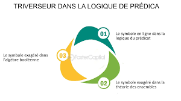
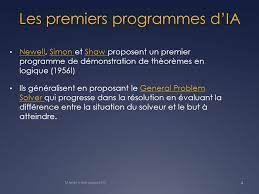

L'exploration des fondements de l'intelligence artificielle nous conduit à une plongée dans son histoire riche et complexe. Des premières idées conceptuelles aux développements contemporains, suivont les évolutions clés ayant conduit à l'émergence de l'IA en tant que force perturbatrice dans le paysage technologique.

La pensée d'une intelligence artificielle dans le temps
Les prémices de l'IA dans l'antiquité
Les racines de l'intelligence et de la pensée artificielle plongent profondément dans les dialogues philosophiques de la Grèce antique, une époque où des esprits éminents tels que Platon et Aristote ont façonné la manière dont nous comprenons la rationalité, la logique et la reproduction de la pensée.
Platon, dans ses œuvres, notamment dans "La République", a abordé des concepts liés à la nature de la connaissance, explorant la question de savoir si la pensée et la compréhension pouvaient être formalisées et systématisées. Il a introduit l'idée de la "théorie des formes" où les connaissances idéales et les réalités matérielles peuvent être distinguées. Ces idées ont indirectement posé les premières questions sur la possibilité de créer des modèles ou des systèmes qui imitent la pensée humaine
Aristote, quant à lui, a élaboré des idées sur la logique formelle dans son œuvre "Organon", fournissant une base pour la compréhension des processus de raisonnement. Ses contributions à la logique, en particulier son développement du syllogisme, ont eu une influence profonde sur la manière dont nous conceptualisons la pensée rationnelle et ont jeté les bases de la formalisation du raisonnement.
Ces dialogues philosophiques ont engendré des questions fondamentales sur la nature de l'esprit humain et ont initié des réflexions sur la possibilité de reproduire ces processus de pensée. Bien que les outils technologiques de l'époque ne permettaient pas de concrétiser ces idées.
À l'époque d'Alexandrie, qui était un centre intellectuel majeur de l'Antiquité, les ingénieurs ont entrepris la création d'automates pour explorer la possibilité de reproduire des comportements humains. Ces automates étaient conçus pour effectuer des mouvements sophistiqués et imiter des actions spécifiques, créant ainsi une forme primitive d'automatisation mécanique.
Ces réalisations des ingénieurs alexandrins démontrent une tentative précoce d'appréhender les mécanismes derrière les mouvements humains et de les traduire en machines. Bien que ces premiers automates n'aient pas atteint le niveau d'intelligence artificielle que nous concevons aujourd'hui,
Les avancées au moyen age et à la Renaissance
Ramon Llull a développé ce qu'il appelait la "machine pensante" ou "Ars Magna" (la Grande Art), un système complexe basé sur des principes logiques. Son objectif était de créer un mécanisme capable de générer des combinaisons logiques de concepts, simulant ainsi le raisonnement humain. Cette approche novatrice de la logique formelle visait à mécaniser la pensée pour produire des résultats argumentatifs.
Leonardo da Vinci, en plus de son génie artistique, était un observateur curieux des mécanismes du monde qui l'entourait. Ses carnets regorgent de croquis détaillés et de notes sur des inventions imaginatives qui semblent anticiper les concepts clés de l'intelligence artificielle. Il a esquissé des idées telles que des machines automatisées, des engrenages complexes et des dispositifs conçus pour imiter certains aspects des fonctions humaines.
Le frein majeur que rencontraient ces précurseurs de l'intelligence artificielle, restait les possibilité technologique de leurs époques respectives.
Les premiers calculs automatiques
Charles Babbage : Les Origines de la Machine Analytique

Charles Babbage, mathématicien et inventeur visionnaire, est célèbre pour ses
conceptions novatrices de machines mécaniques capables d'effectuer des calculs complexes.
Son impact sur le développement de l'informatique est indéniable, notamment à travers ses
idées et travaux révolutionnaires sur la "machine analytique".
Au 19e siècle, Babbage conceptualise la "machine analytique", une conception
mécanique destinée à automatiser des calculs mathématiques complexes. Ce projet visionnaire
était bien en avance sur son temps et a jeté les bases des premiers modèles de calcul
automatique. Bien que la machine analytique n'ait jamais été construite de son vivant en raison
de contraintes technologiques de l'époque, ses idées ont eu une influence majeure sur le
développement ultérieur de l'informatique.
L'héritage de Babbage réside dans la conceptualisation de mécanismes qui vont au-delà des simples calculs arithmétiques, vers la manipulation symbolique des données. Ses travaux ont posé les fondements conceptuels de la programmation informatique en introduisant des notions de séquences d'instructions et de stockage de données, contribuant ainsi de manière significative à l'évolution ultérieure de l'informatique et de l'intelligence artificielle.
Ada Lovelace : Pionnière de la Programmation
Ada Lovelace, collaboratrice éminente de Charles Babbage, est saluée pour ses
contributions exceptionnelles à la machine analytique. Son rôle transcende celui d'une simple
collaboratrice, car elle a formulé des algorithmes conçus spécifiquement pour être exécutés sur
cette machine. Dans ce partenariat, Lovelace a véritablement élargi la portée de la machine
analytique au-delà de simples calculs, en explorant les possibilités d'une machine capable
d'exécuter des opérations complexes.
Les contributions d'Ada Lovelace sont d'une importance particulière, car elle n'a pas
seulement compris la machine de Babbage comme une simple calculatrice, mais plutôt comme
un instrument capable de manipuler des symboles et d'effectuer des opérations définies par des
instructions logiques. Lovelace a ainsi anticipé la notion fondamentale de la programmation
informatique en développant des algorithmes destinés à être exécutés sur la machine analytique.
Son travail visionnaire a ouvert la voie à la compréhension que ces machines pouvaient être utilisées pour bien plus que des calculs mathématiques, posant ainsi les bases conceptuelles de la programmation informatique et ouvrant la voie à l'évolution ultérieure de l'intelligence artificielle. Ada Lovelace est souvent considérée comme la première programmeuse de l'histoire, laissant un héritage durable dans le domaine de l'informatique.
La synergie entre Babbage et Lovelace a été un jalon majeur, posant les bases de la mécanisation du calcul et introduisant des concepts essentiels qui ont ensuite contribué à l'évolution vers l'informatique et, ultimement, vers le domaine de l'intelligence artificielle.
L'Émergence des Concepts Clés
Logique Symbolique : Fondements de la Pensée Automatisée

L'émergence de la logique symbolique, incarnée par des figures telles que George Boole
et ses travaux pionniers sur l'algèbre booléenne, a introduit un cadre théorique révolutionnaire
pour représenter le raisonnement humain à l'aide de symboles et de règles formelles. Ces
concepts ont non seulement révolutionné la pensée mathématique, mais ont également fourni
la base essentielle pour la logique formelle utilisée de nos jours dans le domaine de l'intelligence
artificielle.
Au 19e siècle, George Boole a développé l'algèbre booléenne, un système mathématique
permettant de représenter les opérations logiques à travers des variables binaires et des
opérations telles que "et", "ou", et "non". Ces concepts ont permis de formaliser la logique d'une
manière qui pouvait être exprimée de manière symbolique, établissant ainsi une correspondance
entre le raisonnement humain et les manipulations formelles de symboles.
La logique symbolique a eu un impact majeur sur la pensée mathématique et philosophique, mais son influence s'est étendue bien au-delà de ces domaines. Ces idées ont fourni la base théorique nécessaire à la représentation du raisonnement logique dans les systèmes informatiques. Ainsi, la logique symbolique de Boole constitue un jalon fondamental dans le développement de l'intelligence artificielle moderne, servant de fondation conceptuelle à la construction de systèmes capables de raisonner formellement.
Raisonnement Formel : Représentation de la Pensée Humaine
Les progrès dans le domaine du raisonnement formel, en particulier les travaux novateurs
de Kurt Gödel sur l'incomplétude, ont apporté une contribution majeure à la formalisation des
systèmes mathématiques. Ces idées ont eu une influence profonde sur la modélisation des
processus cognitifs et ont joué un rôle essentiel dans le développement d'algorithmes
d'intelligence artificielle.
Au début du 20e siècle, Kurt Gödel a formulé le célèbre théorème d'incomplétude,
démontrant que dans tout système formel suffisamment puissant pour contenir l'arithmétique,
il existe des énoncés qui ne peuvent ni être prouvés ni réfutés à l'intérieur de ce système. Ces
travaux ont profondément transformé notre compréhension de la logique mathématique, en
montrant les limites intrinsèques de toute tentative de formaliser entièrement les
mathématiques.
Les idées de Gödel ont eu des répercussions importantes dans le domaine de l'intelligence artificielle. En comprenant les limites de la formalisation complète des systèmes, les chercheurs en intelligence artificielle ont adopté des approches plus pragmatiques, reconnaissant la nécessité de compromis et de stratégies heuristiques dans la modélisation des processus cognitifs. Ces avancées ont été essentielles pour la création d'algorithmes d'IA capables de traiter des informations de manière plus souple et adaptative, reflétant ainsi la complexité des raisonnements humains.
Les premiers programmes IA
Émergence des Premiers Programmes d'IA
Pendant les années 1950 et 1960, une série de programmes informatiques ont émergé, symbolisant les premières expérimentations pratiques dans le domaine de l'intelligence artificielle. Des initiatives pionnières, telles que le Logic Theorist de Newell et Simon, ont été lancées dans le but de démontrer la capacité d'une machine à résoudre des problèmes mathématiques de manière similaire à un être humain, marquant ainsi le début de cette transition vers la réalité pratique de l'IA.

Le Logic Theorist, développé par Allen Newell et Herbert A. Simon à la fin des années 1950, était un programme conçu pour prouver des théorèmes mathématiques en utilisant des règles logiques. Cette initiative audacieuse visait à montrer que les machines pouvaient être capables de raisonnement symbolique, établissant ainsi une similitude avec le processus de pensée humaine.
Ces premières expérimentations ont ouvert la voie à la mise en pratique des concepts théoriques de l'intelligence artificielle. Bien que ces premiers programmes étaient limités par la puissance de calcul disponible à l'époque, ils ont néanmoins jeté les bases pour les développements futurs, inspirant la recherche et l'innovation continue dans le domaine de l'intelligence artificielle.
Premières Expérimentations dans le Domaine de l'IA
Ces années ont été le théâtre d'expérimentations pionnières, parmi lesquelles le General Problem Solver (GPS), un projet ambitieux qui visait à résoudre une variété de problèmes en utilisant des stratégies similaires à celles du raisonnement humain. Ces tentatives ont joué un rôle crucial dans l'évolution de l'intelligence artificielle en jetant les bases pour les approches algorithmiques futures.
Le General Problem Solver, développé dans les années 1950 par Allen Newell et Herbert A. Simon, représentait une avancée significative dans la conception de programmes capables de résoudre différents types de problèmes. Le GPS était conçu pour fonctionner avec une base de règles logiques, permettant ainsi de décomposer les problèmes complexes en sous-problèmes et de les résoudre de manière séquentielle.
Ces expérimentations ont contribué à la maturation des approches algorithmiques de l'intelligence artificielle, montrant la faisabilité de développer des systèmes capables de raisonner de manière générale, plutôt que de se limiter à des tâches spécifiques. Le General Problem Solver a ouvert la voie à de nouvelles réflexions sur la conception d'algorithmes intelligents capables de traiter des problèmes complexes et variés, influençant ainsi de manière significative le développement futur de l'intelligence artificielle.
Testez ce que vous avez compris
Question 1 : Quels sont les deux concepts clés du 19éme et du 20éme siécle pour l'avancée vers l'Ia ?
Question 2 : Qui sont les penseurs antiques donnés comme précurseur dans le développement IA ?
Question 3 : Qui est Charles Babbage ?
Question 4 : Qui est Ada Lovelace pour Charles Babbage ?
Question 5 : Qu'est-ce qu'a développé George Bool ?
Question 6 : Que démontre le célèbre théorème d'incomplétude de Kurt Gödel ?
Question 7 : Quand sont apparut les premières expérimentation de programmes d'IA ?
Question 8 : Qui sont Allen Newell et Herbert A. Simon ?
Question 9 : Que signifie l'acronyme GPS
Question 10 : A quoi sert le General Problem Solver ?
Question 11 : Qu'est-ce qui a empêcher les recherches d'avancer plus vite durant la période de la Renaissance ?
Question 12 : Quelle question utile à l'IA se posait Platon dans "La République" ?
Poursuivez votre voyage
L'application de l'IA dans les institutions
Dans cette partie, vous découvrirez les différentes instituions qui utilisent déjà l'intelligence artificielle.

Conseils
Dans cette partie, nous vous donnerons des conseils afin de gagner en productivité dans votre vie pro comme perso.
Les problèmes de l'IA
Dans cette partie, vous suivrez les traces de la création de l'IA, des prémices à nos jours
Veille info
Dans cette partie, vous retrouverez les dernières infos de mise à jours et des nouvelles sorties d'outils.